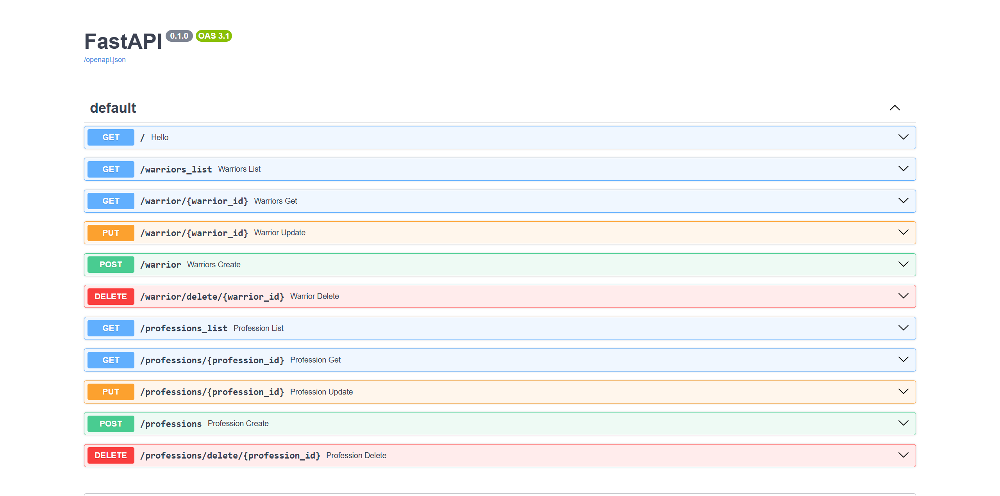

Практика 1.1. Создание базового приложения на FastAPI
В рамках практики я разработал приложение на FastAPI с временной базой данных, включающей воинов и профессии. Реализовал CRUD-операции для обоих типов данных, используя Pydantic для валидации структуры. Все эндпоинты протестированы через автогенерируемую документацию по адресу 127.0.0.1:8000/docs.
Практическая часть
Временная база данных
В main.py созданы две временные базы: temp_bd для воинов и professions для профессий.
professions = [
{
"id": 1,
"title": "Влиятельный человек",
"description": "Эксперт по всем вопросам",
}
]
temp_bd = [
{
"id": 1,
"race": "director",
"name": "Мартынов Дмитрий",
"level": 12,
"profession": {
"id": 1,
"title": "Влиятельный человек",
"description": "Эксперт по всем вопросам"
},
"skills":
[{
"id": 1,
"name": "Купле-продажа компрессоров",
"description": ""
},
{
"id": 2,
"name": "Оценка имущества",
"description": ""
}]
},
{
"id": 2,
"race": "worker",
"name": "Андрей Косякин",
"level": 12,
"profession": {
"id": 1,
"title": "Дельфист-гребец",
"description": "Уважаемый сотрудник"
},
"skills": []
},
]
Модели Pydantic
В файле models.py определены модели для структурирования данных:
from enum import Enum
from typing import Optional, List
from pydantic import BaseModel
class RaceType(Enum):
director = "director"
worker = "worker"
junior = "junior"
class Profession(BaseModel):
id: int
title: str
description: str
class Skill(BaseModel):
id: int
name: str
description: str
class Warrior(BaseModel):
id: int
race: RaceType
name: str
level: int
profession: Profession
skills: Optional[List[Skill]] = []
Эндпоинты для воинов
Реализованы CRUD-операции для воинов в main.py:
- Получение списка воинов:
@app.get("/warriors_list")
def warriors_list() -> List[Warrior]:
return temp_bd
- Получение конкретного воина:
@app.get("/warrior/{warrior_id}")
def warriors_get(warrior_id: int) -> List[Warrior]:
return [warrior for warrior in temp_bd if warrior.get("id") == warrior_id]
- Добавление воина:
@app.post("/warrior")
def warriors_create(warrior: Warrior):
warrior_to_append = warrior.model_dump()
temp_bd.append(warrior_to_append)
return {"status": 200, "data": warrior}
- Удаление воина:
@app.delete("/warrior/delete/{warrior_id}")
def warrior_delete(warrior_id: int):
for i, warrior in enumerate(temp_bd):
if warrior.get("id") == warrior_id:
temp_bd.pop(i)
break
return {"status": 201, "message": "deleted"}
- Обновление воина:
@app.put("/warrior/{warrior_id}")
def warrior_update(warrior_id: int, warrior: Warrior) -> List[Warrior]:
for war in temp_bd:
if war.get("id") == warrior_id:
warrior_to_append = warrior.model_dump()
temp_bd.remove(war)
temp_bd.append(warrior_to_append)
return temp_bd
Эндпоинты для профессий
Реализованы CRUD-операции для профессий в main.py:
- Получение списка профессий:
@app.get("/professions_list")
def profession_list() -> List[Profession]:
return professions
- Получение конкретной профессии:
@app.get("/professions/{profession_id}")
def profession_get(profession_id: int) -> List[Profession]:
return [profession for profession in professions if profession.get("id") == profession_id]
- Создание профессии:
@app.post("/professions")
def profession_create(profession: Profession):
profession_dict = profession.model_dump()
professions.append(profession_dict)
return {"status": 200, "data": profession}
- Удаление профессии:
@app.delete("/professions/delete/{profession_id}")
def profession_delete(profession_id: int):
for i, profession in enumerate(professions):
if profession.get("id") == profession_id:
professions.pop(i)
break
return {"status": 201, "data": "deleted"}
- Обновление профессии:
@app.put("/professions/{profession_id}")
def profession_update(profession_id: int, profession: Profession) -> List[Profession]:
for prof in professions:
if prof.get("id") == profession_id:
profession_to_append = profession.model_dump()
professions.remove(prof)
professions.append(profession_to_append)
return professions
Результат
Все эндпоинты доступны и протестированы через документацию FastAPI:
